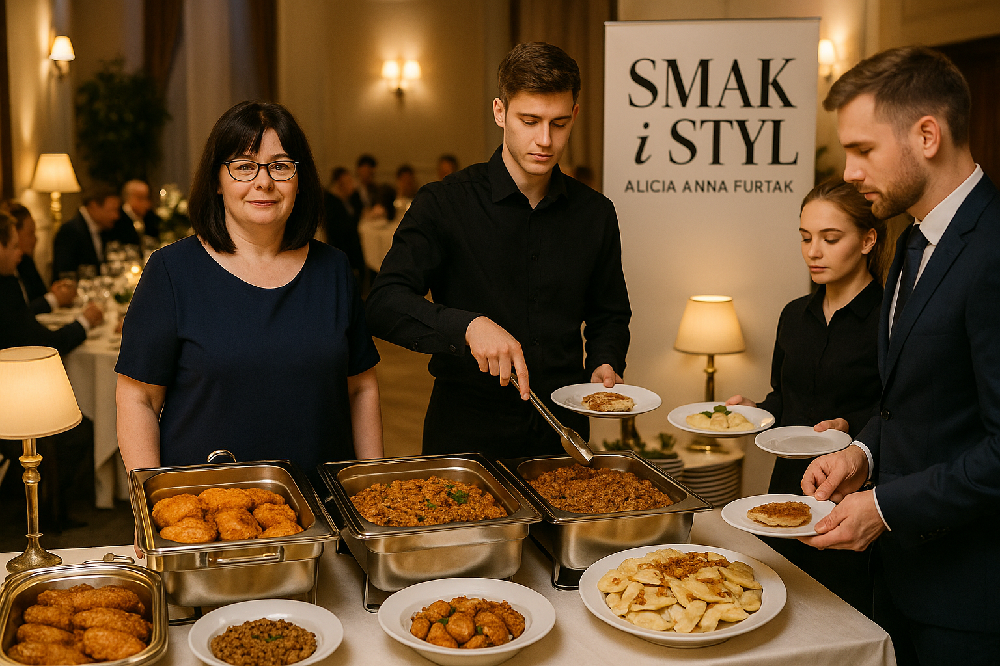

Firma Alicja Furtak Smak i Styl istnieje już od 17 grudnia 2013 roku i jest właścicielem baru zlokalizowanego w Instytucie Teologiczno-Pastoralnym w Rzeszowie, przy ul. Witolda 11A. Obecnie głównym źródłem przychodów jest przygotowywanie i serwowanie posiłków dla studentów tej instytucji, włączając w to kanapki, ciasta, obiady oraz napoje takie jak kawa, herbata, soki i woda. Nasz zespół liczy 4 pracowników, w tym również osobę z niepełnosprawnością.
Po dokładnej analizie rynku oraz obserwacji aktualnych trendów – szczególnie w kontekście pandemii – doszliśmy do wniosku, że kluczowym krokiem dla utrzymania ciągłości biznesowej jest rozszerzenie naszej oferty o usługi cateringowe na terenie Podkarpacia. Nasz catering skierowany jest zarówno do firm, jak i klientów indywidualnych i obejmuje kompleksową obsługę gastronomiczną wydarzeń takich jak spotkania biznesowe, konferencje, bankiety oraz imprezy prywatne.
Naszym priorytetem jest jakość oferowanych dań, wykorzystanie lokalnych składników i innowacyjne podejście do tworzenia menu. Chcemy wyróżniać się na konkurencyjnym rynku poprzez dbałość o najwyższe standardy oraz kreatywność w kuchni. Dzięki rozszerzeniu działalności zwiększymy naszą widoczność na rynku, otworzymy się na nowe możliwości i zdobędziemy nowych, zadowolonych klientów.
Specjalizujemy się w obsłudze firm oraz zewnętrznych imprez okolicznościowych, takich jak konferencje, bankiety, szkolenia czy spotkania integracyjne. Nasze usługi kierujemy wyłącznie do klientów biznesowych i instytucjonalnych działających na terenie województwa podkarpackiego.
Dodatkowo oferujemy możliwość kompleksowej organizacji szkoleń i spotkań – zapewniamy zarówno salę, jak i pełną obsługę gastronomiczną wydarzenia.
Nazwa firmy: Alicja Furtak SMAK i styl
Miejsce działalności:
Instytut Teologiczno-Pastoralny, ul. Witolda 11A, 35-302 Rzeszów
Telefon: 601 446 269